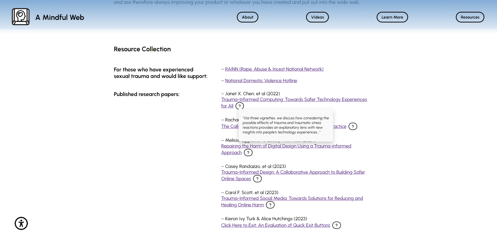
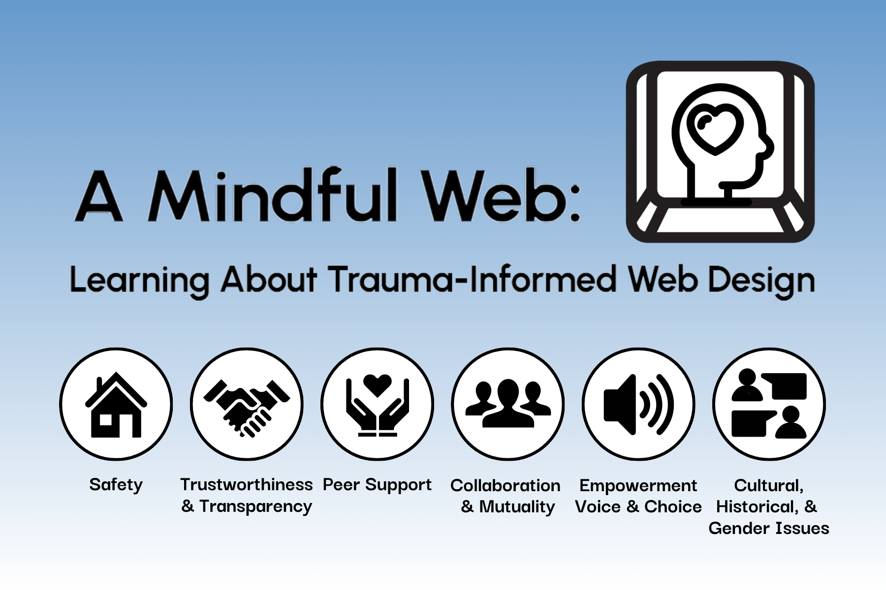
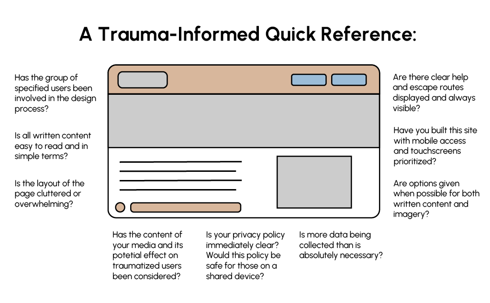

A Mindful Web
The thesis for my M.F.A. degree program exploring trauma-informed web design resources
Project Details
A Mindful Web supports web designers through the trauma-informed design process. It
provides resources for web designers to reference in consideration of an audience that has experienced certain forms of
trauma. This is a website designed and built to house a series of videos with examples of trauma-informed
web features, a basic explanation of the framework, and a list of external resources for further reading or
to see other designers’ related open-source code. I hope in the future to expand on what I have started here
to include more focused resources helpful to those who have experienced different types of trauma and hold
different intersectional identities because all of this will affect the way designers should approach their
work.
This is an ongoing project. You can explore it as it stands now and find the links to the YouTube playlist and full paper
HERE.
Image Gallery

Resources section of the page with interactive sneak peaks.

Postcard design used at my thesis show, showing off the 6 principles of trauma-informed care.
Back of postcard design with a QR code to the page and my information.

A quick reference poster highlighting trauma-informed design questions.